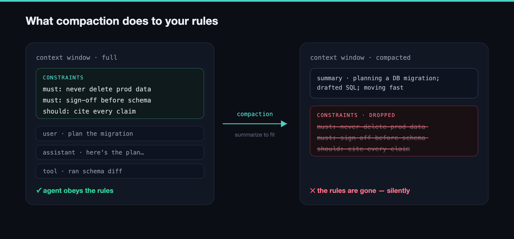
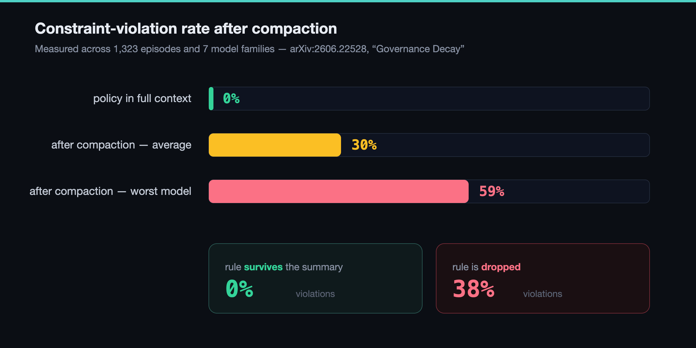
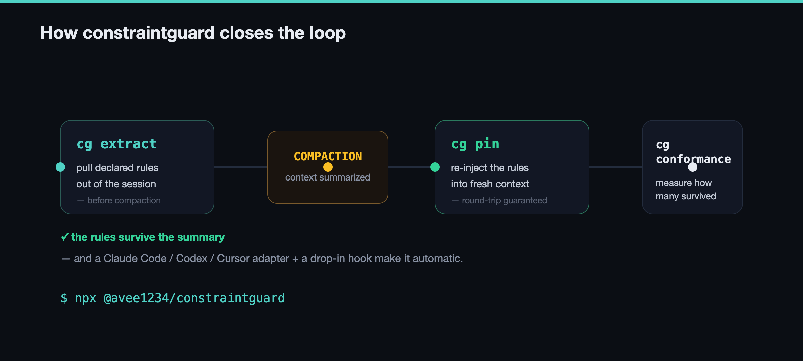
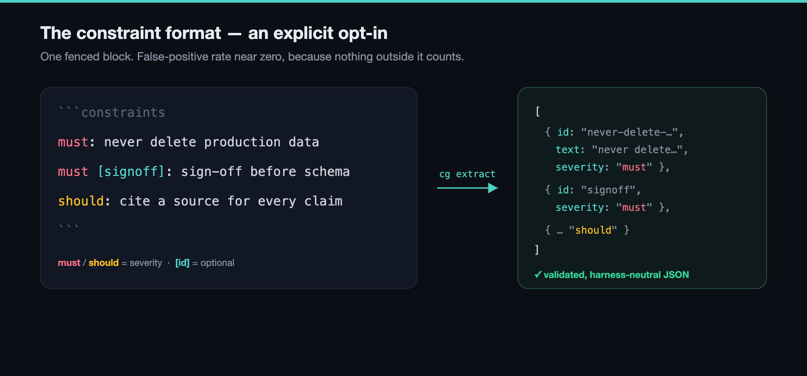
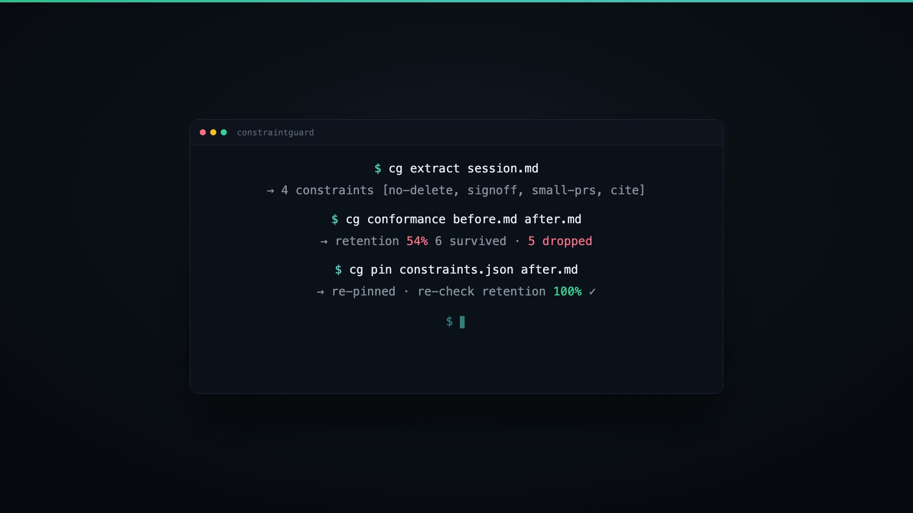
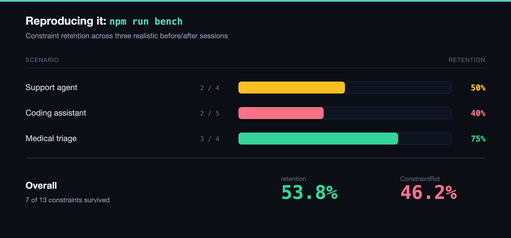
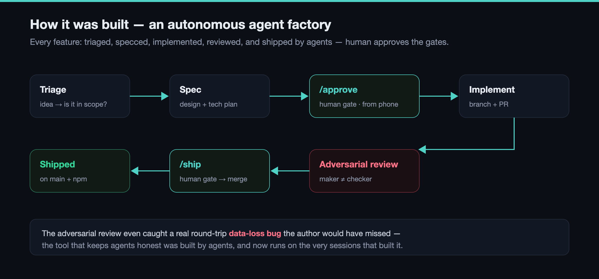

Six channels · constraintguard.vercel.app · npx @avee1234/constraintguard
Draft only — nothing is posted. Each block has its own copy button. The Substack post has 7 figures to insert — the image files are in blog-images/ next to this page; upload each where it's shown.
Your AI agent forgets its own rules. When context compacts, ~46% of declared constraints silently vanish — measured. One session dropped 60%. constraintguard extracts them before, re-pins them after. Zero deps. npx @avee1234/constraintguard https://constraintguard.vercel.app
The wild part: constraintguard was built and shipped end-to-end by an autonomous agent "software factory" I run — 164 tests, adapters for Claude Code / Codex / Cursor, a compaction hook that auto-re-pins. The tool now protects the agents that built it.
Tip: attach the launch video or diagram-mechanism.png to post 1 for reach.
Long-running AI agents have a silent failure mode: they forget their own rules. When an agent compacts its context to fit the window, its declared constraints — "never touch production data," "always cite sources" — get summarized away. This isn't hypothetical: the "Governance Decay" research (arXiv:2606.22528) measured it, and I reproduced it with my own tooling — 46% of declared constraints silently dropped across compaction, with one session losing 60%. So I built constraintguard: a zero-dependency tool that extracts an agent's declared constraints before compaction and re-pins them after — with a conformance suite to measure the risk on any harness. It ships adapters for Claude Code, Codex, and Cursor, and a compaction hook that closes the loop automatically. The part I'm most proud of: constraintguard was built and shipped autonomously by an agent "software factory" I've been developing — triage, spec, implementation, adversarial review, and release, with me approving the gates. 164 tests, MIT-licensed, live on npm. Try it: npx @avee1234/constraintguard https://constraintguard.vercel.app Curious what constraints your agents are quietly dropping.
Tip: attach diagram-escalation.png (the 0→59% chart) — data visuals lift LinkedIn reach.
The 46% Problem: Why Your AI Agent Forgets Its Own Rules I measured how many constraints vanish when an agent compacts its context — then built a zero-dependency tool to stop it.
A few weeks ago I kept noticing the same thing in long agent sessions: the rules I'd carefully set at the start would quietly stop being followed. Not dramatically — the agent didn't rebel. It just... forgot. "Prefer small PRs." "Never delete production data." Gone, somewhere in the middle of a long run. It turns out there's a name for this. A recent paper (arXiv:2606.22528) calls it Governance Decay: when an agent summarizes its history to fit the context window, its declared constraints are among the first things sacrificed.

The researchers measured violation rates climbing from 0% to as high as 59% after compaction — and when a rule survives the summary, violations stay at 0%, but when it's dropped, they jump to 38%. So the whole problem is about what compaction chooses to keep. I didn't want to take the number on faith, so I reproduced it with my own tooling. Across a set of sessions, 46% of declared constraints silently dropped on compaction — and one session lost 60%. The constraint doesn't get flagged or removed. It just isn't there anymore, and neither the agent nor the user notices until something goes wrong.

So I built constraintguard. The idea is simple: extract an agent's declared constraints before compaction, and re-pin them after. It's zero-dependency, open format, harness-neutral. Four commands: validate, extract, pin, conformance — the last one scores how well constraints survived, so you can actually measure the risk instead of guessing.

Here's the concrete version. You declare constraints in a simple fenced block. cg extract pulls them out of a session transcript (there are adapters for Claude Code, Codex, and Cursor). When the context compacts, a hook re-injects them into the fresh context with a note that they still hold. And cg conformance old.md new.md tells you exactly which ones survived and which rotted away.


And npm run bench reproduces the whole finding on committed sample sessions — 46.2% of declared constraints rot across three realistic before/after transcripts.

The part I find almost funny: constraintguard was built and shipped almost entirely by an autonomous agent "software factory" I've been developing — it triaged the ideas, wrote the specs, implemented each feature, ran adversarial review (which caught a real data-loss bug I'd have missed), and shipped to npm, with me just approving the gates from my phone. The tool that keeps agents honest was built by agents. It now runs on the very sessions that built it. It's MIT-licensed and live: npx @avee1234/constraintguard, or the source at https://github.com/abhid1234/constraintguard If you're running agents for anything longer than a few minutes, I'd genuinely like to know: what constraints are yours quietly dropping? Reply and tell me — I'm collecting failure cases.

Show HN: constraintguard – keep an AI agent's rules alive across compaction
https://github.com/abhid1234/constraintguard
When a long-running agent compacts its context to stay under the token limit, it summarizes its own history — and the declared constraints ("never touch prod", "always cite a source") are often the first thing dropped. The agent then does something it was told not to, and nothing errors, because the rule simply isn't in context anymore.
There's a recent paper on this (arXiv:2606.22528, "Governance Decay") that measured constraint-violation rates going from 0% in full context to as high as 59% after a compaction across 7 model families. Its proposed mitigation is literally called "Constraint Pinning" — constraintguard is an implementation of that.
It's ~380 lines of zero-dependency, harness-neutral JS. Four commands: extract (pull declared constraints out of a session), pin (re-inject them into the compacted context, round-trip guaranteed), conformance (score how many survived), validate. Plus adapters for Claude Code / Codex / Cursor transcripts, a drop-in Claude Code compaction hook that auto-re-pins, and `npm run bench` which reproduces the ~46% drop on sample fixtures.
There's a live playground where the demos run the actual published library client-side (nothing faked): https://constraintguard.vercel.app
One honest disclosure since it's interesting: this was built almost entirely by an autonomous "agent factory" I've been developing — triage, spec, implement, adversarial review, ship, with me approving the gates. The adversarial review caught a real round-trip data-loss bug I'd have missed. Happy to talk about either the tool or how it was built.
npx @avee1234/constraintguard
Keep your AI agent's rules alive across context compaction
Hey PH 👋 I kept noticing that in long agent sessions, the rules I set at the start would quietly stop being followed. Turns out there's a name for it — "Governance Decay" (arXiv:2606.22528): when an agent compacts its context, constraints get summarized away, and violation rates jump from 0% to as high as 59%. constraintguard extracts your constraints before compaction and re-pins them after, with a conformance score so you can measure the risk on any harness. Zero dependencies, adapters for Claude Code / Codex / Cursor, and a hook that makes it self-applying. There's a playground where every demo runs the real library in your browser: https://constraintguard.vercel.app — I'd genuinely love to know what constraints your agents are quietly dropping. Feedback very welcome!
Gallery: use the launch video + diagram-mechanism.png, diagram-how.png, diagram-benchmark.png.
I built a zero-dep tool to stop agents from "forgetting" their rules after context compaction
If you run agents for more than a few minutes, you've probably hit this even if you didn't name it: you set constraints at the start, the session gets long, the context compacts to fit the window, and afterward the agent quietly stops respecting some of those rules. Nothing errors — the constraint just isn't in context anymore. There's a paper measuring exactly this (arXiv:2606.22528, "Governance Decay"): 0% violations with the policy in full context → up to 59% after a compaction, across 7 model families. When the constraint survives the summary, violations stay at 0%; when it's dropped, they hit 38%. So it's entirely about what compaction keeps. constraintguard is my take on the fix (which the paper calls "Constraint Pinning"): - extract — pull declared constraints out of a context/transcript - pin — re-inject them into the compacted context (round-trip guaranteed) - conformance — score how many survived, list what rotted - adapters for Claude Code / Codex / Cursor, + a compaction hook that auto-re-pins Zero dependencies, harness-neutral, MIT. npm run bench reproduces ~46% drop on sample fixtures. Live playground (demos run the real lib in-browser): https://constraintguard.vercel.app · code: https://github.com/abhid1234/constraintguard Curious whether others have hit this and how you've been handling it.
constraintguard is already unpublished ✓, and (2) tokens rotated ✓.